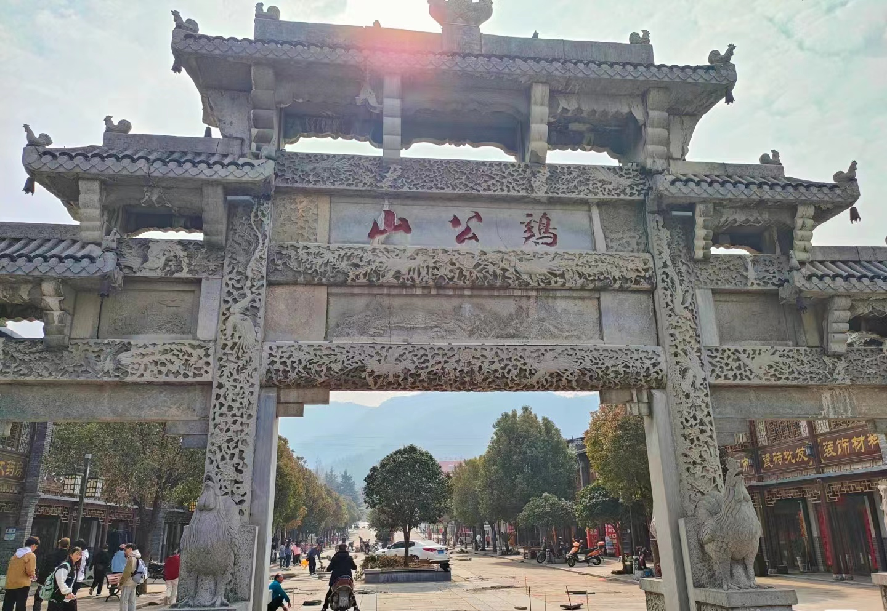

鸡公山保护区地处北亚热带的边缘，淮南大别山西端的浅山区。受东亚季风气候的影响，具有北亚热带向暖温带过渡的季风气候和山地气候的特征。这里四季分明，光、热、水同期。春季气温变幅大、夏季炎热雨水多、秋高气爽温差小、冬长寒冷雨雪稀。 、139.8公里），流域面积约2490平方公里，河道天然落差1030米，平均坡降7.4‰，上、中游平均河宽50米，下游平均河宽达375米，平均年径流量28.5亿立方米。楠溪江的主要支流有岩坦溪、张溪、鹤盛溪、小楠溪、花坦溪、五尺溪和陡门溪等。
鸡公山主体山系是近东西向或北西向延伸，地形总体上南高北低。主体山系是长江与淮河两大流域的分水岭，山系以北的东双河、九渡河汇入浉河，复入淮河；山系以南的环水、大悟河汇入汉水，复入长江。鸡公山雨量充沛、泉源众多、水源丰富，俗有“山中一阵雨，林内百泉流”之说。
鸡公山有"青分豫楚、襟扼三江"之美誉，"佛光、云海、雾淞、雨淞、霞光、异国花草、奇峰怪石、瀑布流泉"被称为八大自然景观，山上有清末民初不同国别和风格的建筑群，有"万国建筑博物馆"之美称，是中国历史上第一个公共租界[.0‰（一说7.4‰），流域面积2436平方公里（一说2490平方公里、2489.97平方公里） ，平均年径流量28.5亿立方米。中、上游平均河宽50米，下游平均河宽375米。
月亮湖是建成于1983年的12月，建设月亮湖主要是解决山上的用水和美化环境，月湖水面积0.23平方公里，汇流长680米，湖面大概3万平方米，总容量大10万立方米。
鸡公山的南街，在20世纪二三十年代时非常的繁华，有小上海之称，当时店铺众多，有钱庄、绸缎庄、呢绒、布匹店、杂物店、瓷器店、食品店、水果店、牛奶店、皮鞋店、裁缝铺、时令服装店、饭馆旅舍等等。
避暑山庄坐落于狮子峰（又名马鞍峰）南侧山半腰。由肖耀南、喻怀远、张厚生、杜节义、周际泰等人在1919到1925年间所建。当时称新店避暑山庄。他们计划建48组别墅，从狮子岭到北岗一线已测量打桩，由于时局变动，继而北伐开始，工程停歇。
在上山8公里处，远看一幢尖耸入云的别墅，就是北岗的揽云射月楼。鸡公山的大门，检票口――宝剑山口，传说，明末起义将军张献忠兵败鸡公山把随身宝剑插入此处，发誓不报此仇不取此剑，数年后，此剑冲天而出，此地得名宝剑山。
长生谷入口处的图腾柱上雕刻着许多动植物图案，雕刻精美、形态丰富，代表人类最原始的图腾，表现出大自然的和谐。立柱为证，希望人们尊重科学、珍爱自然、珍惜生命……长生谷是鸡公山新开发不久的又一处胜景，有“小小九寨”之称，是自然山水极佳、原始韵味浓烈的风景长廊。